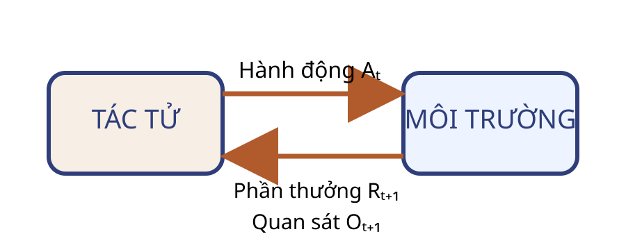
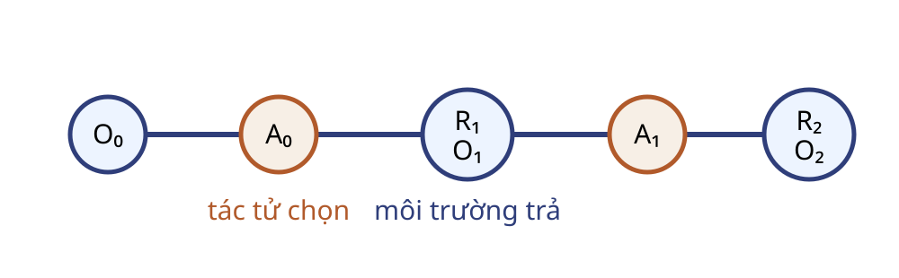
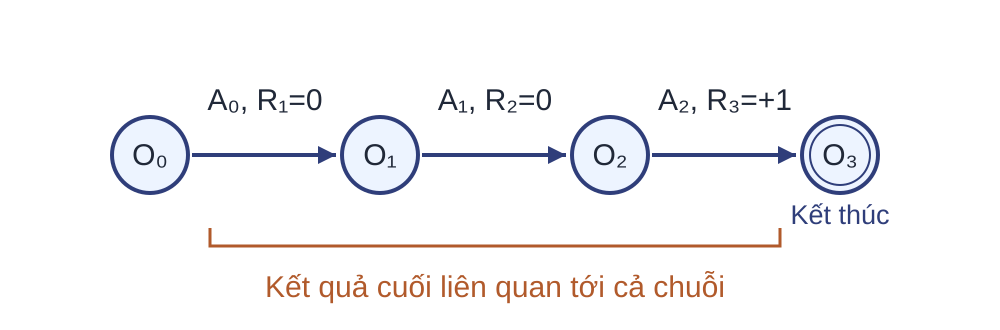
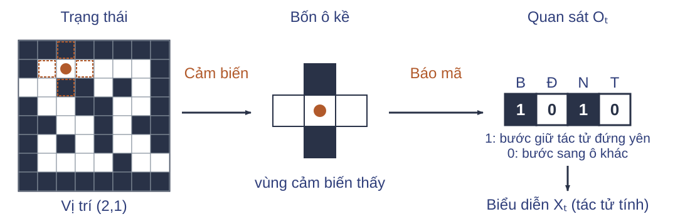
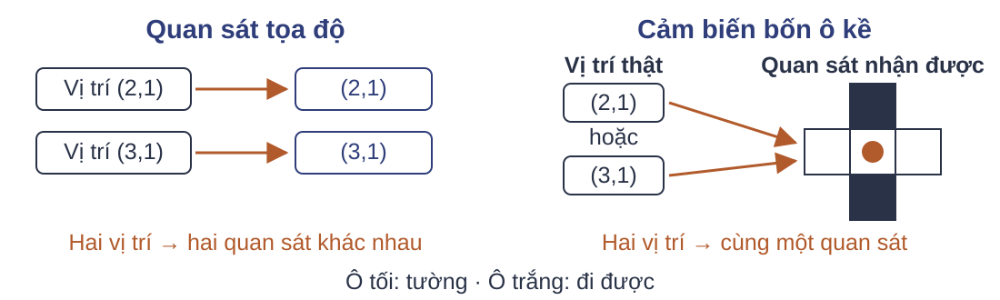
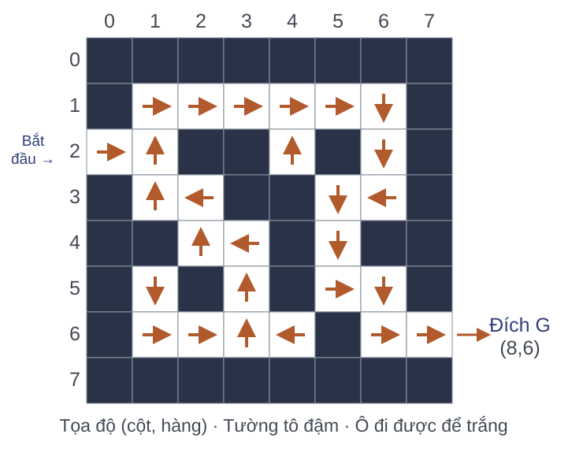
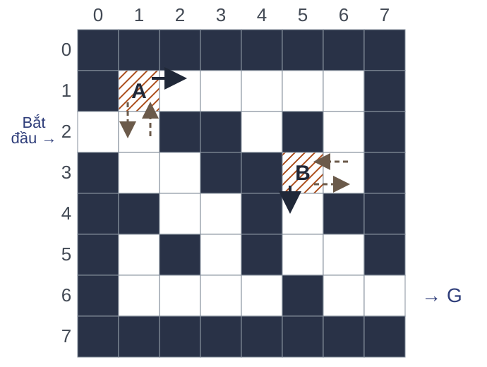
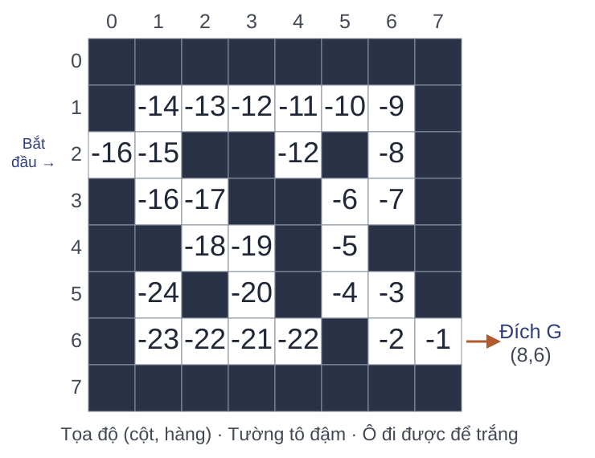
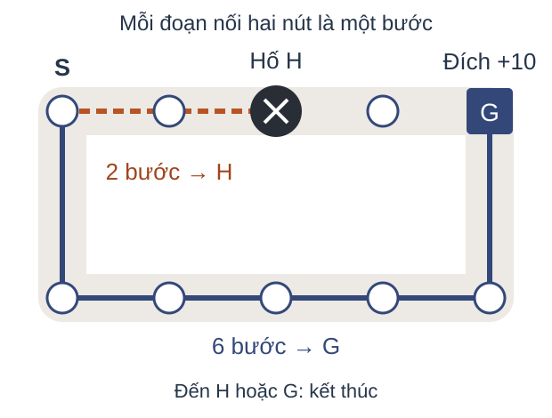
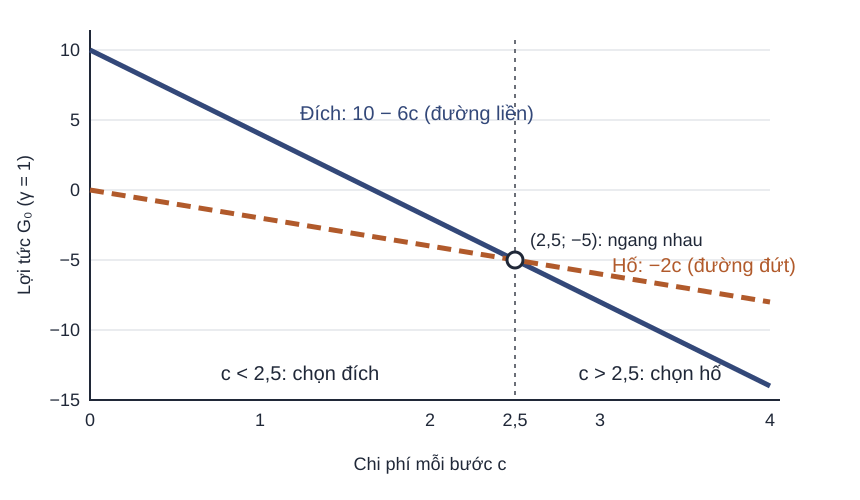

2.Vòng tương tác và tín hiệu thưởng
Muốn ghi chuỗi quyết định thành dữ liệu, phải cố định thứ tự quan sát, hành động, phần thưởng.
Ranh giới · Mẫu chuyển · Chỉ số thời gian · Giả thuyết phần thưởng · Phản hồi trễ
Ranh giới tác tử–môi trường

Nhắc lại: tác tử chỉ chọn $A_t$; mọi thứ nó không đổi được tùy ý thuộc môi trường (Bài 01).
Ví dụ. Mê cung: tác tử chọn hướng; bản đồ, luật gặp tường, phần thưởng $-1$ thuộc môi trường.
Ví dụ. Robot: bộ điều khiển là tác tử; động cơ, cảm biến thuộc môi trường.
Ví dụ: một bước Đông từ ô $(0,2)$
Mê cung $8\times8$, $-1$ mỗi bước; tường hoặc biên giữ tác tử đứng yên.
Tại $t=0$: tác tử nhận tọa độ $(0,2)$, chọn Đông.
Môi trường trả phần thưởng $-1$ và tọa độ mới $(1,2)$.
Một bước gồm quan sát, hành động, phần thưởng và quan sát mới.
Mẫu chuyển
Định nghĩa. Tại $t<T$, tác tử có quan sát $O_t\in\mathcal O$, chọn hành động (action) $A_t\in\mathcal A$;
môi trường trả $R_{t+1}\in\mathbb R$, $O_{t+1}\in\mathcal O$. Bộ bốn sau là mẫu chuyển (transition) (Định nghĩa 02.1):
$$(O_t,A_t,R_{t+1},O_{t+1}).$$

Mẫu chuyển trong thư viện Gymnasium
Hàm env.step(a) cài đặt một bước:
nhận $A_t$; trả $O_{t+1},R_{t+1}$ và hai cờ.
terminated: môi trường vào trạng thái kết thúc.
truncated: lượt bị cắt, như Lunar Lander của Bài 05 cắt sau $1\,000$ bước.
Lượt bị cắt chưa tới trạng thái kết thúc; lợi tức của lượt chưa được quan sát trọn.
Bài tập: mẫu chuyển tại ô $(6,1)$
Câu hỏi: quan sát là tọa độ; tại $t=7$ tác tử ở $(6,1)$; $(6,2)$ trống, $(7,1)$ là tường.
(a) Chọn Nam: ghi $(O_7,A_7,R_8,O_8)$. (b) Chọn Đông: ghi lại mẫu chuyển.
(c) Giải thích chỉ số $8$ của phần thưởng ở (a).
Lời giải: (a) $O_7=(6,1)$, $A_7$ là Nam, $R_8=-1$, $O_8=(6,2)$.
(b) $A_7$ là Đông, $R_8=-1$, $O_8=(6,1)$: đứng yên. (c) Chuyển từ $t=7$ sang $t=8$.
Tín hiệu học
Nhu cầu: đọc thành phần $R_{t+1}$ của mẫu chuyển.
| Khung học | Tín hiệu | Thời điểm nhận |
|---|
| Có giám sát | Nhãn đúng cho mỗi mẫu | Có sẵn khi học |
| Không giám sát | Không có nhãn | — |
| Tăng cường | Phần thưởng mỗi bước | Sau hành động |
Nhắc lại: phần thưởng chấm chuyển vừa xảy ra, không chỉ ra hành động đúng (Bài 01).
Giả thuyết phần thưởng
Nhắc lại: giả thuyết phần thưởng (reward hypothesis), Bài 01:
Mục tiêu là cực đại kỳ vọng của tổng phần thưởng.
Ví dụ. Mê cung $8\times8$ với $-1$ mỗi bước:
đường 16 bước: tổng $-16$; vòng vào ngõ cụt $(4,2)$: 18 bước, tổng $-18$.
Diễn giải: tổng lớn nhất khi tới $\mathrm G$ bằng ít bước nhất, do cách gán phần thưởng.
Phản hồi trễ

Ví dụ. Ván cờ: phần thưởng $0$ ở nước chưa kết thúc, $+1$ khi thắng.
Phần thưởng khác $0$ gắn với nước cuối; cả $A_0,A_1,A_2$ đều có thể góp phần.
3.Thông tin khả dụng và tính Markov
Muốn biết dữ liệu nào đủ để chọn hướng và dự báo, phải tách trạng thái, quan sát, biểu diễn.
Trạng thái · Quan sát · Biểu diễn · Lịch sử và quỹ đạo · Tính Markov
Ví dụ: cảm biến bốn ô kề tại ô $(2,1)$
Nhu cầu: xác định dữ liệu tác tử có khi cảm biến chỉ báo bốn ô kề.

Tại $(2,1)$ và tại $(3,1)$: cùng quan sát $(1,0,1,0)$, theo thứ tự Bắc, Đông, Nam, Tây.
Trạng thái, quan sát và biểu diễn
| Đối tượng | Ý nghĩa | Trên mê cung |
|---|
| Trạng thái (state) $S_t$ | biến mô tả môi trường, do người mô hình chọn | ô hiện tại |
| Quan sát (observation) $O_t$ | thông tin tác tử nhận | mã bốn ô kề |
| Biểu diễn (representation) $X_t$ | dữ liệu tác tử dùng để chọn | mã, có thể kèm mã trước |
Mở rộng Bài 01: $S_t$ được chọn; $X_t$ mới.
Biểu diễn từ thông tin khả dụng
Định nghĩa. Biểu diễn là giá trị hàm $f_t$ do người thiết kế chọn, trên dữ liệu trước $A_t$:
$$X_t=f_t\bigl(O_{0:t},A_{0:t-1},R_{1:t}\bigr)\in\mathcal X.$$
$O_{0:t}=(O_0,\dots,O_t)$; hai dãy sau rỗng khi $t=0$ (Định nghĩa 02.2).
Chỉ quan sát hiện tại: $X_t=\phi(O_t)$, như mã bốn ô kề.
Cửa sổ $m=2$: $X_t=(O_t,A_{t-1},O_{t-1})$. Toàn bộ dữ liệu: kích thước tăng theo $t$.
Ví dụ: ba bước đầu trên mê cung $8\times8$
Nhu cầu: đặt tên cho quá khứ để hỏi nó có giúp dự báo.
Từ $(0,2)$ đi Đông, Bắc, Đông; mỗi bước $-1$:
$(0,2)$, Đông, $-1$, $(1,2)$, Bắc, $-1$, $(1,1)$, Đông, $-1$, $(2,1)$.
Tác tử chỉ có mã $(1,0,1,1),(0,1,0,0),(1,0,0,1),(1,0,1,0)$, hành động đã chọn, phần thưởng.
Diễn giải: dãy ô là lịch sử $H_3$ của định nghĩa sau.
Lịch sử trạng thái và quỹ đạo
Định nghĩa. Lịch sử (history) trạng thái tới $t$ là dãy sau (Định nghĩa 02.3):
$$H_t=(S_0,A_0,R_1,S_1,\dots,A_{t-1},R_t,S_t),\qquad H_0=(S_0).$$
Quỹ đạo (trajectory) của lượt kết thúc tại $T<\infty$ là $\tau=H_T$.
Ví dụ. Dãy ba bước đầu là $H_3$, gồm $10$ thành phần.
Lưu ý: với $O_t=S_t$, $H_t$ là lịch sử quan sát của Bài 01.
Quan sát đầy đủ và một phần

Nhận xét. Quan sát đầy đủ (full observability): có $g$ với $S_t=g(O_t)$ ở mọi $t$ (Nhận xét 02.4).
Quan sát một phần (partial observability): có quan sát ứng với hai trạng thái khác nhau có thể xảy ra.
Mã $(1,0,1,0)$ ứng với đúng năm ô: $(2,1),(3,1),(5,1),(2,6),(7,6)$.
Bài tập: mã bốn ô kề
Câu hỏi: mã (Bắc, Đông, Nam, Tây), $1$ khi bước giữ tác tử đứng yên.
(a) Tính mã tại $(1,2)$ và tại $(6,3)$.
(b) Phân loại hai cách quan sát, tọa độ và mã bốn ô kề.
Lời giải: (a) $(1,2)$: $(0,1,0,0)$; $(6,3)$: $(0,1,1,0)$.
(b) Tọa độ: đầy đủ, $g$ đồng nhất. Mã: một phần, vì $(2,1),(3,1)$ cùng mã.
Ví dụ: mê cung có chìa khóa
Nhu cầu: biết khi nào trạng thái hiện tại đủ để dự báo bước kế tiếp.
Chìa khóa ở ngõ cụt $(4,2)$; lối $(7,6)\to\mathrm G$ chỉ mở khi đã có chìa khóa.
$h$: đứng yên hai lần tại $(0,2)$, rồi theo đường 16 bước; $h'$: theo đường đó, rẽ vào $(4,2)$ rồi về.
Cả hai tới $(7,6)$ tại $t=17$. Với $a$ là bước Đông:
$$\begin{aligned}\Pr(S_{18}=\mathrm G\mid H_{17}=h,A_{17}=a)&=0,\\ \Pr(S_{18}=\mathrm G\mid H_{17}=h',A_{17}=a)&=1.\end{aligned}$$
Tính Markov
Định nghĩa. Trạng thái có tính Markov (Markov property) nếu với mọi $t,h,a,s',r$, $h$ kết thúc tại $s$:
$$\begin{aligned}&\Pr(S_{t+1}=s',R_{t+1}=r\mid H_t=h,A_t=a)\\&\quad=\Pr(S_{t+1}=s',R_{t+1}=r\mid S_t=s,A_t=a).\end{aligned}$$
Giả thiết: tập đếm được; $\Pr(H_t=h,A_t=a)>0$; đúng với mọi chính sách (Định nghĩa 02.5).
Lưu ý: tính Markov thuộc biến chọn làm trạng thái; tọa độ thiếu bit $k$, còn (ô, $k$) thỏa.
Mở rộng trạng thái bằng lịch sử
Mệnh đề. Với các tập đếm được, dãy $\tilde S_t=H_t$ luôn có tính Markov (Mệnh đề 02.6).
Chứng minh. Biết $\tilde S_t=H_t$ là biết toàn bộ lịch sử của dãy $\tilde S$.
Ý nghĩa: luôn đạt được tính Markov, với giá là $3t+1$ thành phần.
Ví dụ. Mê cung có chìa khóa: cửa sổ $m\le11$ tọa độ gần nhất không tách $h$ khỏi $h'$.
Bài tập: kiểm tra tính Markov
Câu hỏi: (a) Mê cung có chìa khóa, trạng thái (ô, $k$), xuất phát với $k=0$:
tìm trạng thái chưa kết thúc không xuất hiện.
(b) Mê cung gốc: bước Đông từ $(2,1)$, từ $(3,1)$ cho mã nào; mã bốn ô kề có Markov không.
Bài tập: kiểm tra tính Markov
Lời giải: (a) Vào ô $(4,2)$ là nhặt chìa khóa, nên $(4,2)$ với $k=0$ không xuất hiện.
Còn $54-1=53$ trạng thái xuất hiện được.
(b) Đông từ $(2,1)$: mã $(1,0,1,0)$; từ $(3,1)$: mã $(1,0,0,0)$.
Hai lịch sử cùng kết thúc ở mã $(1,0,1,0)$, cùng chọn Đông, cho hai dự báo khác nhau.
Kết luận: mã bốn ô kề không có tính Markov.
4.Quy tắc chọn hành động
Muốn so sánh hai tác tử trên cùng mê cung, phải viết cách chọn hướng thành một phân phối.
Chính sách ngẫu nhiên · Chính sách xác định · Xác suất dãy hành động · Quan sát một phần
Chính sách

Nhu cầu: hai tác tử cùng ở ô $(1,2)$ có thể chọn hai hướng khác nhau.
Chính sách (policy) chọn hành động từ biểu diễn $X_t$, thay cho lịch sử $h$ của Bài 01.
Mỗi ô đi được nhận một hướng; theo mũi tên từ $(0,2)$, tác tử tới $\mathrm G$ sau 16 bước.
Ví dụ: hai quy tắc tại ô $(1,2)$
Biểu diễn là tọa độ, $x=(1,2)$; ô Đông $(2,2)$ là tường.
| Quy tắc | Bắc | Đông | Nam | Tây |
|---|
| Luôn Bắc | $1$ | $0$ | $0$ | $0$ |
| Bắc hoặc Đông | $0{,}5$ | $0{,}5$ | $0$ | $0$ |
Diễn giải: mỗi hàng là một phân phối: không âm, tổng bằng $1$.
Chọn Đông thì đứng yên tại $(1,2)$, vẫn nhận $-1$.
Chính sách trên biểu diễn
Định nghĩa. Chính sách ngẫu nhiên (stochastic policy) gán cho mỗi $x\in\mathcal X$ phân phối trên các hành động hợp lệ $\mathcal A(x)$:
$$\pi(a\mid x)\ge0,\qquad\sum_{a\in\mathcal A(x)}\pi(a\mid x)=1.$$
Tác tử theo $\pi$ chọn với $\Pr(A_t=a\mid X_t=x)=\pi(a\mid x)$ ở mọi $t$ (Định nghĩa 02.8).
Quy tắc không đổi theo $t$ là chính sách dừng (stationary policy).
Ví dụ. Quy tắc thứ hai: $\pi(a\mid(1,2))=0{,}5$ khi $a$ là Bắc hoặc Đông.
Chính sách xác định
Định nghĩa. Chính sách xác định (deterministic policy) là hàm $\pi:\mathcal X\to\mathcal A$ với
$$A_t=\pi(X_t).$$
Trường hợp riêng của chính sách ngẫu nhiên: $\pi(a\mid x)=1$ khi $a=\pi(x)$.
| Ô $x$ | Hướng $\pi(x)$ |
|---|
| $(0,2)$ | Đông |
| $(1,2)$ | Bắc |
| $(1,1)$ | Đông |
Ví dụ: xác suất của một dãy hai hành động
Tọa độ làm biểu diễn. Tại $(1,2)$: Bắc, Đông mỗi hướng $0{,}5$; tại $(1,1)$: Đông $0{,}9$, Nam $0{,}1$.
Tính xác suất của hai dãy, xuất phát tại $(1,2)$.
Bắc tới $(1,1)$, rồi Đông: $0{,}5\cdot0{,}9=0{,}45$; tác tử tới $(2,1)$.
Đông đâm tường, đứng yên, rồi Bắc: $0{,}5\cdot0{,}5=0{,}25$.
Diễn giải: thừa số thứ hai lấy tại ô môi trường đưa tới.
Ví dụ: hai ô cùng mã bốn ô kề

Biểu diễn là mã bốn ô kề; $\mathrm A=(1,1)$, $\mathrm B=(5,3)$ cùng mã $(1,0,0,1)$.
Mũi tên liền: cần Đông tại $\mathrm A$, Nam tại $\mathrm B$; mũi tên đứt: vòng lặp nếu chọn hướng kia.
Mọi chính sách xác định trên mã: không bao giờ tới $\mathrm G$.
Đông, Nam mỗi hướng $0{,}5$ tại mã đó, mã khác theo mũi tên: kỳ vọng $20$ bước.
Bài tập: chính sách ngẫu nhiên tại một ô
Câu hỏi: tại $x=(1,2)$ (Đông là tường): Bắc $0{,}2$, Đông $0{,}5$, Tây $0$.
Tại $(1,1)$: Đông $0{,}9$, Nam $0{,}1$; tại $(1,3)$: luôn Bắc.
(a) Tính xác suất chọn Nam tại $x$; xác định hay ngẫu nhiên.
(b) Tính xác suất vẫn ở $x$ sau hai bước.
Lời giải: (a) $1-0{,}2-0{,}5-0=0{,}3$; ngẫu nhiên.
(b) Đông–Đông $0{,}25$; Bắc–Nam $0{,}02$; Nam–Bắc $0{,}3$; tổng $0{,}57$.
5.Lợi tức, hàm giá trị và hàm động lực
Muốn so sánh hai bước cùng phần thưởng tức thời, phải đánh giá cả chuỗi phần thưởng về sau.
Ưu tiên dừng · Hệ số chiết khấu · Lợi tức · Hàm giá trị · Hàm động lực
Kết quả dài hạn của một bước
Nhắc lại: qua ngõ cụt $(4,2)$ tổng $-18$; đường 16 bước tổng $-16$.
Nhu cầu: đánh giá từng bước, như Đông và Nam tại $(4,1)$, cùng $-1$.
- Quy một chuỗi phần thưởng, kể cả chuỗi không kết thúc, về một số hữu hạn.
- Lấy trung bình khi có yếu tố ngẫu nhiên.
- Dự báo riêng một bước của môi trường.
Ví dụ: hai chuỗi $(2,0)$ và $(1,1)$
Nhu cầu: tổng của Bài 01 không xác định khi lượt không kết thúc; cần trọng số $w_i$.
Lợi ích (utility): tổng có trọng số; thêm cùng phần thưởng vào đầu không được đổi thứ tự.
| Trọng số | $U(2,0)$ | $U(1,1)$ | Thêm $r$ vào đầu |
|---|
| $(1,1,1,\dots)$ | $2$ | $2$ | $r+2$ và $r+2$ |
| $w_i=0{,}5^{i-1}$ | $2$ | $1{,}5$ | $r+1$ và $r+0{,}75$ |
| $(1;\,0{,}5;\,0{,}5;\dots)$ | $2$ | $1{,}5$ | $r+1$ và $r+1$ |
Ưu tiên dừng
Định nghĩa. Với trọng số $(w_i)$ dùng chung cho mọi độ dài, lợi ích cộng của $\sigma\in\mathbb R^n$ là
$$U(\sigma)=\sum_{i=1}^{n}w_i\sigma_i,\qquad\sigma\succ\sigma'\iff U(\sigma)>U(\sigma').$$
$[r,\sigma]=(r,\sigma_1,\dots,\sigma_n)$ là chuỗi nhận $r$ rồi tiếp tục bằng $\sigma$.
Ưu tiên dừng (stationary preference): với mọi $\sigma,\sigma'$, kể cả khác độ dài, và mọi $r$ (Định nghĩa 02.10),
$$\sigma\succ\sigma'\iff[r,\sigma]\succ[r,\sigma'].$$
Trọng số hình học
Định lý. Giả thiết: lợi ích cộng, trọng số chung, $w_1=1,\ w_i>0,\ w_{i+1}\le w_i$.
Kết luận: ưu tiên dừng khi và chỉ khi có $\gamma\in(0,1]$ với $w_i=\gamma^{i-1}$ (Định lý 02.11):
$$U([r,\sigma])=r+\gamma\,U(\sigma).$$
Ý nghĩa: đẩy lùi nhân hiệu lợi ích với hệ số chiết khấu (discount factor) $\gamma$.
Chứng minh. Hai chuỗi ngang nhau, khác ở vị trí $1$ và $j$, đẩy lùi vẫn ngang nhau: $w_{j+1}=w_2w_j$.
Ví dụ: ba bước cuối của đường 16 bước
Tại $t=13$ tác tử ở $(6,5)$; còn $(6,5)\to(6,6)\to(7,6)\to\mathrm G$, mỗi bước $-1$; $T=16$.
Tính $\sum_{k=0}^{2}\gamma^kR_{14+k}$ với $\gamma=0{,}5$ và $\gamma=1$.
$\gamma=0{,}5$: $(-1)\cdot1+(-1)\cdot0{,}5+(-1)\cdot0{,}25=-1{,}75$.
$\gamma=1$: tổng $-3$, bằng âm số bước còn lại.
Diễn giải: phần thưởng muộn hơn một bước có trọng số nhỏ hơn $\gamma$ lần.
Lợi tức
Định nghĩa. Với $\gamma\in[0,1]$, lượt kết thúc tại $T<\infty$ và $t<T$, lợi tức từ $t$ là
$$G_t=\sum_{k=0}^{T-t-1}\gamma^kR_{t+k+1},\qquad G_T=0.$$
Nhiệm vụ tiếp diễn, $T=\infty$: cần thêm $\gamma<1$ và $\lvert R_{t+1}\rvert\le R_{\max}$ (Định nghĩa 02.12).
$\gamma=1$: lợi tức của Bài 01. $\gamma=0$: $G_t=R_{t+1}$, tác tử cận thị (myopic).
Hệ thức truy hồi và chặn của lợi tức
Mệnh đề. (a) Với mọi $t<T$:
$$G_t=R_{t+1}+\gamma\,G_{t+1}.$$
(b) Nếu $\gamma<1$ và $\lvert R_{t+1}\rvert\le R_{\max}$ với mọi $t$, chuỗi hội tụ tuyệt đối và (Mệnh đề 02.13)
$$\lvert G_t\rvert\le\frac{R_{\max}}{1-\gamma}.$$
Chứng minh. (a) Tách số hạng $k=0$. (b) Bất đẳng thức tam giác và tổng hình học.
Bài tập: lợi tức chiết khấu
Câu hỏi: lượt kết thúc tại $T=4$; $R_1=2,\ R_2=0,\ R_3=-1,\ R_4=4$.
(a) Với $\gamma=0{,}5$, tính $G_3,G_2,G_1,G_0$ bằng hệ thức truy hồi.
(b) Với $\gamma=0{,}5$, tính $G_0$ của chuỗi mới $(-3,2,0,-1,4)$ bằng $U([r,\sigma])=r+\gamma U(\sigma)$.
(c) Tính $G_0$ với $\gamma=0$ và $\gamma=1$.
Lời giải: (a) $G_3=4,\ G_2=1,\ G_1=0{,}5,\ G_0=2{,}25$. (b) $-3+0{,}5\cdot2{,}25=-1{,}875$.
(c) $\gamma=0$: $G_0=R_1=2$; $\gamma=1$: $G_0=2+0-1+4=5$.
Ví dụ: môi trường hai nhánh
Nhu cầu: một số đại diện cho trạng thái khi lợi tức của lượt là ngẫu nhiên.
Từ $s$, chính sách cố định; môi trường chọn mỗi nhánh với xác suất $0{,}5$; $-1$ mỗi bước, $\gamma=1$.
| Nhánh | Số bước | Xác suất | Lợi tức |
|---|
| ngắn | $3$ | $0{,}5$ | $-3$ |
| dài | $5$ | $0{,}5$ | $-5$ |
Trung bình $0{,}5\cdot(-3)+0{,}5\cdot(-5)=-4$; không lượt nào cho đúng $-4$.
Hàm giá trị trạng thái
Giả thiết: $X_t=S_t$; trạng thái Markov; môi trường dừng (xác suất chuyển không đổi theo $t$); $\pi$ dừng.
Định nghĩa. Hàm giá trị trạng thái (state-value function) của $\pi$, lượt xuất phát tại $s$:
$$v_\pi(s)=\mathbb E_\pi\bigl[G_0\mid S_0=s\bigr],\qquad\mathbb E_\pi\bigl[\lvert G_0\rvert\mid S_0=s\bigr]<\infty.$$
$\mathbb E_\pi$ theo $\pi$ và môi trường; hai nhánh: $v_\pi(s)=-4$ (Định nghĩa 02.14).
Với $O_t=S_t$, Markov, dừng: $v_\pi(h)$ của Bài 01 bằng $v_\pi(s)$, $s$ cuối $h$.
Ví dụ: giá trị của chính sách trên mê cung $8\times8$

Chính sách trên hình mê cung; chuyển tất định, $-1$ mỗi bước, $\gamma=1$.
$v_\pi(s)$ là âm số bước tới $\mathrm G$ theo mũi tên, xuất phát tại $s$.
$v_\pi((0,2))=-16$, $v_\pi((7,6))=-1$, $v_\pi((4,2))=-12$.
Diễn giải: mỗi ô thỏa $v_\pi(s)=-1+v_\pi(s')$, với $s'$ là ô mũi tên chỉ tới.
Hàm động lực
Nhu cầu: dự báo $(S_{t+1},R_{t+1})$ sau $(s,a)$, không phụ thuộc $\pi$.
Ví dụ. Đông từ $(0,2)$ cho $((1,2),-1)$; Đông từ $(7,6)$ cho $(\mathrm G,-1)$; xác suất $1$.
Định nghĩa. Với trạng thái Markov và môi trường dừng, hàm động lực (dynamics function) là
$$p(s',r\mid s,a)=\Pr\bigl(S_{t+1}=s',R_{t+1}=r\mid S_t=s,A_t=a\bigr).$$
$s$ chưa kết thúc, $a\in\mathcal A(s)$, $s'$ kể cả trạng thái kết thúc; $\sum_{s'}\sum_rp=1$ (Định nghĩa 02.16).
Suy ra $p(s'\mid s,a)=\sum_rp(s',r\mid s,a)$ và $r(s,a)=\sum_{s',r}r\,p(s',r\mid s,a)$.
Dự đoán và điều khiển
Nhận xét. Dự đoán (prediction): tính $v_\pi$ của một chính sách cố định (Nhận xét 02.17).
Điều khiển (control): tìm hoặc cải thiện chính sách.
Ví dụ. Tại $(4,1)$: Đông cho $-1+v_\pi((5,1))=-11$, hơn Nam $-1+v_\pi((4,2))=-13$.
Lưu ý: $v_\pi$ phụ thuộc $\pi$; $p$ thì không.
Mô hình (model) của tác tử: xấp xỉ $\hat p$ của $p$; phương pháp phi mô hình chỉ dùng mẫu chuyển.
Bài tập: hàm động lực của bước trượt
Câu hỏi: $s=(0,2)$, $a$ là bước Đông: tới $(1,2)$ với xác suất $0{,}8$, đứng yên với $0{,}2$; $-1$ mỗi bước.
Viết $p(s',r\mid s,a)$; tính $p(s'\mid s,a)$ và $r(s,a)$.
Lời giải: $p((1,2),-1\mid s,a)=0{,}8$; $p((0,2),-1\mid s,a)=0{,}2$.
$p((1,2)\mid s,a)=0{,}8$, $p((0,2)\mid s,a)=0{,}2$; $r(s,a)=(-1)\cdot0{,}8+(-1)\cdot0{,}2=-1$.
Tổng $0{,}8+0{,}2=1$: bảng hợp lệ.
6.Thiết kế phần thưởng
Muốn biết cách gán phần thưởng dẫn tới hành vi nào, phải so sánh lợi tức các đường kết thúc.
Chi phí mỗi bước · Ngưỡng đổi hành vi · Phạt bổ sung · Khuyến khích và chế tài
Ví dụ: mê cung đích–hố

Nhu cầu: biết mức phạt mỗi bước nào giữ tác tử cực đại lợi tức tới đích.
Mỗi bước: $-c$ với $c\ge0$, kể cả bước cuối.
Vào $\mathrm G$: thêm $+10$. Vào $\mathrm H$: không thêm.
$\mathrm G,\mathrm H$ kết thúc lượt; không chiết khấu; chuyển tất định.
Ngắn nhất: $2$ bước tới $\mathrm H$, $6$ bước tới $\mathrm G$.
Ví dụ: mê cung đích–hố, hai lợi tức
Tính lợi tức $G_0$ từ $\mathrm S$ của hai đường ngắn nhất, $\gamma=1$.
| Đường | Phần thưởng từng bước | Lợi tức $G_0$ |
|---|
| Tới $\mathrm G$, $6$ bước | năm bước $-c$, bước cuối $10-c$ | $10-6c$ |
| Vào $\mathrm H$, $2$ bước | hai bước $-c$ | $-2c$ |
Ví dụ: mê cung đích–hố, ba mức chi phí
| $c$ | Đích: $10-6c$ | Hố: $-2c$ | Đường có lợi tức lớn hơn |
|---|
| $0$ | $10$ | $0$ | đích |
| $1$ | $4$ | $-2$ | đích |
| $3$ | $-8$ | $-6$ | hố |
Diễn giải: với $c=3$, đường tới đích chịu tổng chi phí $18$, vào hố chỉ $6$.
Ngưỡng chi phí mỗi bước

$10-6c=-2c\iff c=2{,}5$; tại ngưỡng, hai lợi tức cùng bằng $-5$.
Ngưỡng đổi hành vi
Mệnh đề. Giả thiết: đích–hố, vào $\mathrm H$ thêm $-c_{\mathrm H}$, $c_{\mathrm H}\ge0$; $c\ge0$; $\gamma=1$; tất định.
Tác tử tối ưu cực đại lợi tức kỳ vọng từ $\mathrm S$; quỹ đạo vô hạn: giới hạn tổng riêng.
Kết luận: tác tử tối ưu tới $\mathrm G$ khi $c<c^*$, vào $\mathrm H$ khi $c>c^*$ (Mệnh đề 02.18):
$$c^*=\frac{10+c_{\mathrm H}}{4}.$$
Ý nghĩa: $10+c_{\mathrm H}$ phải bù chi phí của bốn bước chênh lệch.
Bài tập: phạt hố bổ sung
Câu hỏi: mê cung đích–hố, $\gamma=1$, $-c$ mỗi bước; vào $\mathrm H$ thêm $-c_{\mathrm H}$.
(a) $c=3$: tìm điều kiện của $c_{\mathrm H}$ để tác tử tối ưu tới đích; giá trị nguyên nhỏ nhất.
(b) $c_{\mathrm H}=4$: tìm mọi $c\ge0$ để tác tử tối ưu tới đích.
Lời giải: (a) $-8>-6-c_{\mathrm H}\iff c_{\mathrm H}>2$; nguyên nhỏ nhất là $3$.
(b) $c^*=(10+4)/4=3{,}5$; tới đích khi $0\le c<3{,}5$.
Khuyến khích và chế tài
Khuyến khích: thưởng $+10$ ở đích cho hành vi mong muốn.
Chế tài: phạt $c_{\mathrm H}$ khi vào hố, hành vi không mong muốn.
Với $c$ đủ lớn, vào hố vẫn có lợi tức lớn hơn dù có phạt $c_{\mathrm H}$ hữu hạn.
Mô hình giả định tác tử cực đại một con số; pháp luật còn xét quyền, nghĩa vụ, công bằng.
7.Tổng kết và chuyển tiếp
Muốn dùng các thành phần giao diện ở Bài 03, phải giữ đủ giả thiết của từng kết quả.
Giả thiết không được bỏ · Bài tập tổng hợp · Tự kiểm tra · Bài tập về nhà
Kết quả về thông tin và chính sách
| Kết quả | Giả thiết không được bỏ | Công thức hoặc thuật toán |
|---|
| Mẫu chuyển | phản hồi sinh sau khi chọn $A_t$ | $(O_t,A_t,R_{t+1},O_{t+1})$ |
| Biểu diễn | chỉ dùng dữ liệu có trước $A_t$ | $X_t=f_t(O_{0:t},A_{0:t-1},R_{1:t})$ |
| Tính Markov | mọi lịch sử có xác suất dương, mọi chính sách | $\Pr(\cdot\mid H_t,A_t)=\Pr(\cdot\mid S_t,A_t)$ |
| Lịch sử làm trạng thái | tập đếm được | $\tilde S_t=H_t$ |
| Chính sách | đầu vào là biểu diễn; không đổi theo $t$ | $A_t\sim\pi(\cdot\mid X_t)$ |
Kết quả về lợi tức, giá trị và phần thưởng
| Kết quả | Giả thiết không được bỏ | Công thức hoặc thuật toán |
|---|
| Trọng số hình học | lợi ích cộng; trọng số chung, dương, không tăng | ưu tiên dừng $\iff w_i=\gamma^{i-1}$, $0<\gamma\le1$ |
| Lợi tức | $T<\infty$, hoặc $\gamma<1$ và phần thưởng bị chặn | $G_t=R_{t+1}+\gamma G_{t+1}$ |
| Hàm giá trị | $X_t=S_t$; Markov; dừng; kỳ vọng hữu hạn | $v_\pi(s)=\mathbb E_\pi[G_0\mid S_0=s]$ |
| Hàm động lực | tập đếm được; Markov; môi trường dừng | $p(s',r\mid s,a)$ |
| Ngưỡng đổi hành vi | $c\ge0$; $\gamma=1$; tất định; tác tử tối ưu | $c^*=(10+c_{\mathrm H})/4$ |
Bài tập: mê cung đích–hố có chiết khấu
Câu hỏi: mê cung đích–hố, không phạt thêm ở hố, nhưng $\gamma=0{,}9$.
Ngắn nhất: 6 bước tới $\mathrm G$, 2 bước tới $\mathrm H$.
(a) Tính lợi tức của hai đường với $c=1$ và $c=3$; chọn đường.
(b) Tìm ngưỡng $c^*$ và so với $2{,}5$ khi $\gamma=1$.
Gợi ý: $m$ bước $-c$ cho $-c(1-\gamma^m)/(1-\gamma)$; $+10$ ở bước thứ sáu nhân $\gamma^5$.
Bài tập: mê cung đích–hố có chiết khấu
Lời giải: $(1-0{,}9^6)/0{,}1\approx4{,}686$; $10\cdot0{,}9^5\approx5{,}905$; $1+0{,}9=1{,}9$.
Tới $\mathrm G$: $G_0=5{,}905-4{,}686\,c$. Vào $\mathrm H$: $G_0=-1{,}9\,c$.
(a) $c=1$: $1{,}22>-1{,}9$, chọn đích. $c=3$: $-8{,}15<-5{,}7$, chọn hố.
(b) $5{,}905-4{,}686\,c=-1{,}9\,c\iff c^*=5{,}905/2{,}786\approx2{,}12$.
Kết luận: chiết khấu giảm thưởng đích ($10\to5{,}905$) nhiều hơn chênh lệch chi phí ($4\to2{,}786$): ngưỡng giảm còn $2{,}12$.
Trả lời vấn đề trung tâm
- Mẫu chuyển $(O_t,A_t,R_{t+1},O_{t+1})$: phần thưởng của $A_t$ mang chỉ số $t+1$.
- Bản đồ cố định: tọa độ đầy đủ, Markov; mã bốn ô kề: năm ô cùng mã $(1,0,1,0)$.
- Trên mã: chính sách xác định không tới $\mathrm G$; Đông, Nam mỗi hướng $0{,}5$ cho $-20$.
- Markov, dừng, kỳ vọng hữu hạn: $v_\pi((0,2))=-16$ bằng liệt kê quỹ đạo; tại $(4,1)$ Đông $-11$ hơn Nam $-13$.
- Đích–hố: $c^*=(10+c_{\mathrm H})/4$ khi $\gamma=1$; $c^*\approx2{,}12$ khi $\gamma=0{,}9$, $c_{\mathrm H}=0$.
Nguồn: bài giảng gốc (2025–2026), trang 1–27; Sutton và Barto (2018), §3.1–3.5.
Câu hỏi tự kiểm tra
Câu hỏi: trả lời và nêu kết quả đã dùng.
- Mê cung có chìa khóa: tọa độ là quan sát đầy đủ hay một phần; có Markov không?
- Phần thưởng $-1$ ngay sau bước Nam tại $(4,1)$ có đủ đánh giá bước đó không?
- Phân biệt $G_t$ của một lượt với $v_\pi(s)$.
- Biết $p$ có đồng nghĩa với biết chính sách tốt nhất không?
Bài tập về nhà và tài liệu đọc
| Mạch | 2 | 3 | 4 | 5 | 6 | 7 |
|---|
| Tệp bài tập | 02.1, 02.14 | 02.2, 02.3, 02.15 | 02.4, 02.19 | 02.5, 02.7, 02.16, 02.17 | 02.8, 02.18, 02.20 | 02.21, 02.22 |
|---|
| Chỉ trong ghi chú | — | 02.11 | 02.13 | 02.6, 02.9, 02.10(a), 02.12 | 02.10(b) | — |
|---|
Tài liệu đọc: Sutton và Barto (2018), §3.1–3.5, §17.3; bài giảng gốc, trang 1–27.
Ghi chú bài giảng · Bài tập
Bài 03: quá trình quyết định Markov (Markov decision process, MDP); phương trình Bellman từ hệ thức truy hồi.